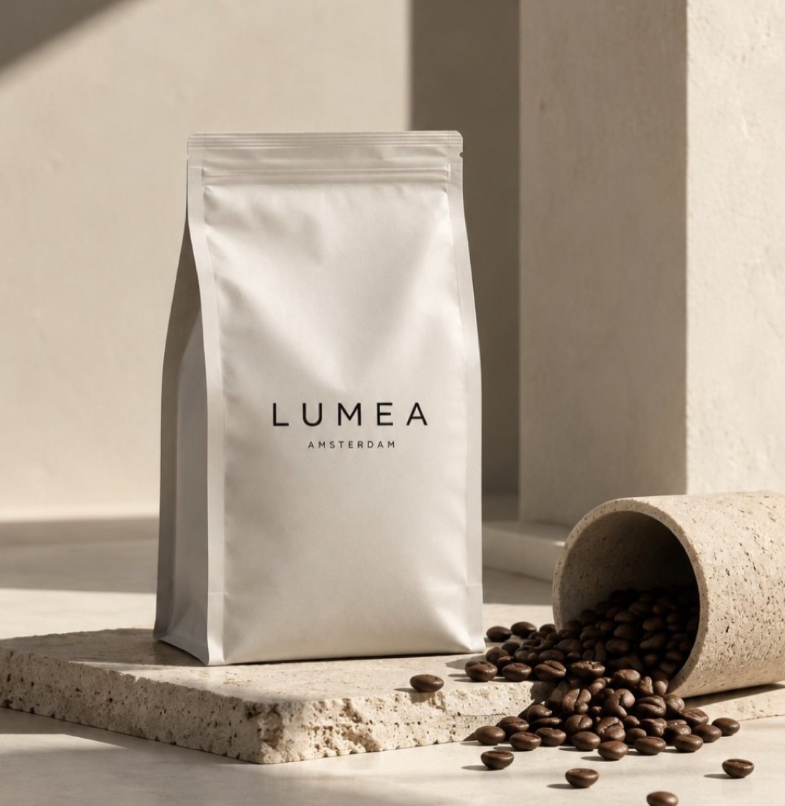
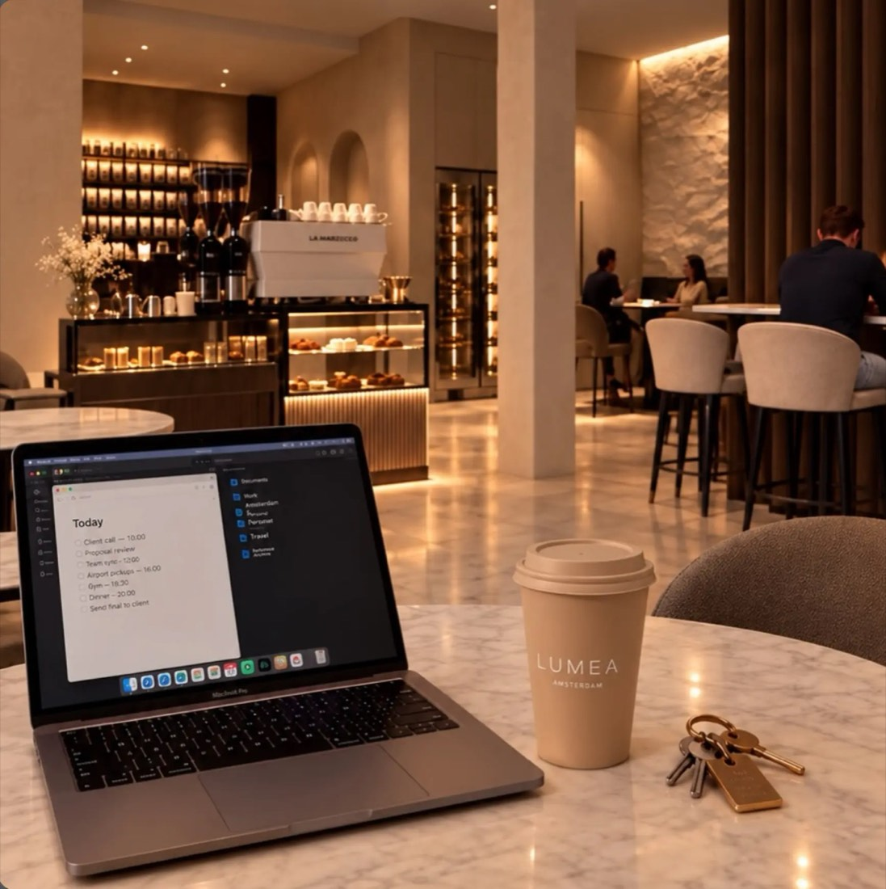
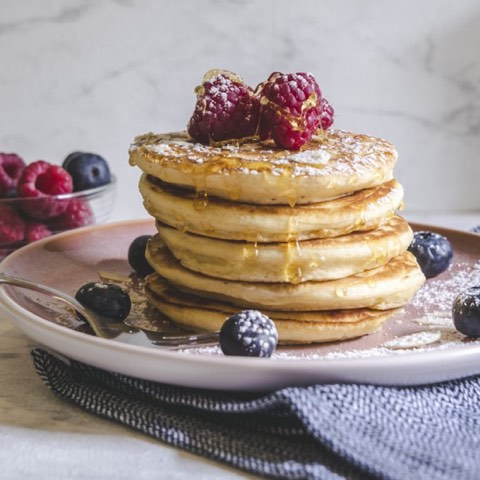
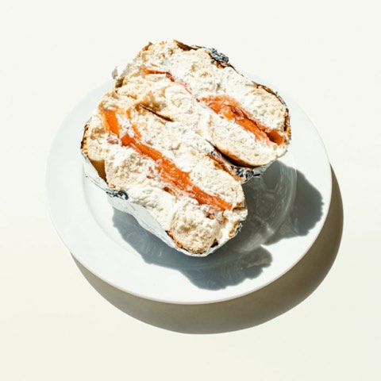
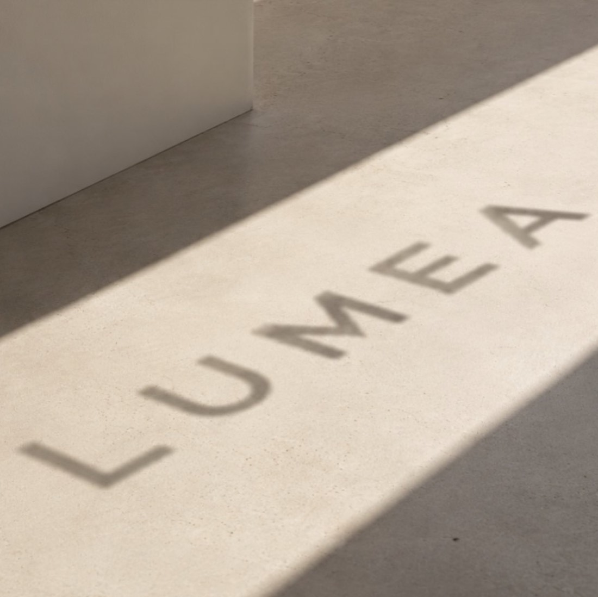
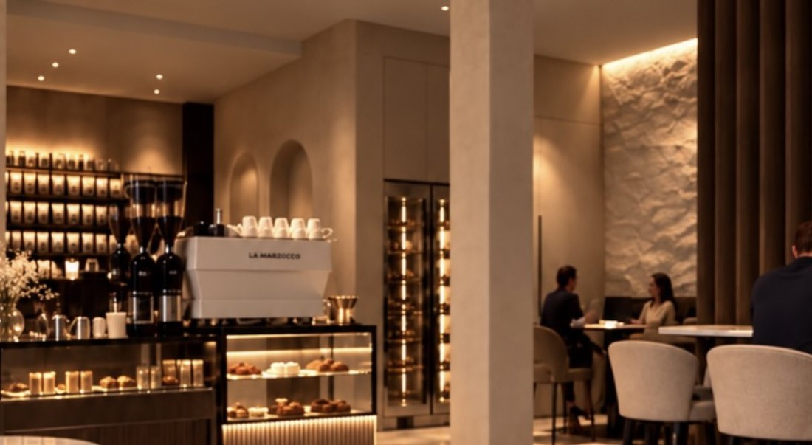
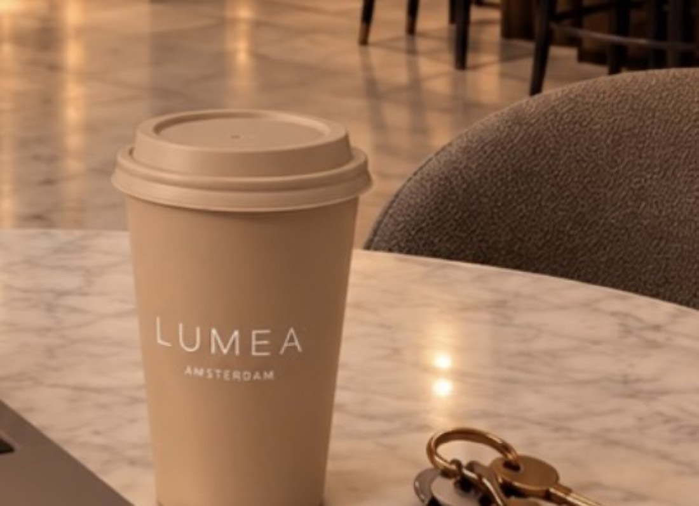
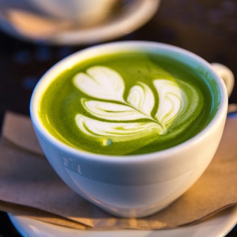
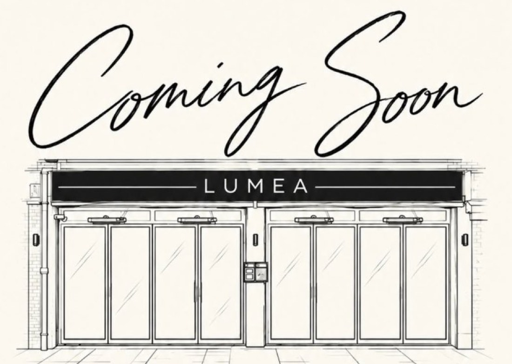

01
Coffee
Specialty coffee, rustig gezet. Van espresso tot flat white, en negen soorten matcha.
Waar licht en smaak samenkomen.
Specialty coffee, ontbijt en lunch aan de Johan Huizingalaan. Rooted in quality, made for moments.
Dagelijks open · 07:00 – 19:00


Specialty coffee, rustig gezet. Van espresso tot flat white, en negen soorten matcha.

Pancakes, eieren zoals je ze wilt en bowls. Om rustig de dag mee te beginnen.

Broodjes, panini's, tosti's en salades. Voor tussendoor, of om af te spreken.

Lumea is een nieuwe koffie- en lunchplek aan de Johan Huizingalaan. Zacht steen, warm licht en eerlijk eten. Voor trage ochtenden, werkmiddagen en alles daartussen.
Sfeerbeelden van Lumea. De definitieve inrichting kan nog afwijken.

Via Instagram


Lumea opent binnenkort. Volg Instagram om de openingsdatum niet te missen.
Volg ons op Instagram voor de openingsdatum, previews en de eerste kop koffie.
@lumea_amsterdamm